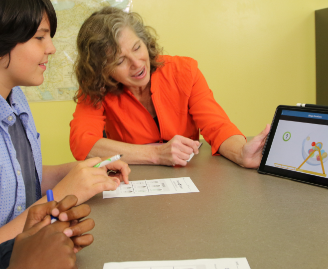

Build strong foundational skills
ABOUT OUR CURRICULUM
The most robust Social‑Emotional Learning Curriculum anywhere
Everyday Speech provides a full-fledged curriculum to help you teach Social-Emotional skills to your students through interactive videos, worksheets and activities. It’s all done for you.

Who Can Use Everyday Speech?
Conversation Topics
Emotional Recognition
Bullying Prevention
Problem Solving
Showing Empathy
Self-Regulation
Self-Esteem
Kindergarten
Elementary
Secondary
High School
Covering All Ages and Learners
Materials are laid out in lesson plans for both general and special education students to ensure the best access and retention of SEL skills, no matter how your students learn best.
Special Ed
SLPs
Social Worker
School Psychologist
BCBA
Whole Class
Teachers
SEL Instructor
Guidance Counsellor
Built for all social skill roles
We provide the entire school the best tools possible to teach SEL lessons and teaching training videos so all will feel confident in how they’re teaching.
Everyday Speech Curriculum Summary
Video Modeling is the foundation of our curriculum
The gold-standard in interventions for social skills, Video Modeling is an evidence-based strategy using video recordings to model a desired skill.
This technique has been shown to quickly improve and maintain new social skills.
Our videos teach a full array of social competencies to improve school adjustment, cope with ever changing social environments, navigate emotions, make informed social decisions to solve problems, and understand prescribed social rules.
Over 20 years of research support the powerful benefits of Video Modeling
Evidence-Based
The Social Learning Curriculum was designed based on the following tenets

Developmentally Sequenced skills allows continuum of learning
Our Curriculum allow for a continuum of learning as students age. All of the skills, goals, and units are ordered developmentally and sequentially. Users progress rapidly by building upon previously taught skills. We provide the roadmap. Follow it closely or flexibly by selecting individualized lessons.
Developmentally Sequenced skills allows continuum of learning
Our Curriculum allow for a continuum of learning as students age. All of the skills, goals, and units are ordered developmentally and sequentially. Users progress rapidly by building upon previously taught skills. We provide the roadmap. Follow it closely or flexibly by selecting individualized lessons.
Developmentally Sequenced skills allows continuum of learning
Our Curriculum allow for a continuum of learning as students age. All of the skills, goals, and units are ordered developmentally and sequentially. Users progress rapidly by building upon previously taught skills. We provide the roadmap. Follow it closely or flexibly by selecting individualized lessons.
Developmentally Sequenced skills allows continuum of learning
Our Curriculum allow for a continuum of learning as students age. All of the skills, goals, and units are ordered developmentally and sequentially. Users progress rapidly by building upon previously taught skills. We provide the roadmap. Follow it closely or flexibly by selecting individualized lessons.
Developmentally Sequenced skills allows continuum of learning
Our Curriculum allow for a continuum of learning as students age. All of the skills, goals, and units are ordered developmentally and sequentially. Users progress rapidly by building upon previously taught skills. We provide the roadmap. Follow it closely or flexibly by selecting individualized lessons.
Developmentally Sequenced skills allows continuum of learning
Our Curriculum allow for a continuum of learning as students age. All of the skills, goals, and units are ordered developmentally and sequentially. Users progress rapidly by building upon previously taught skills. We provide the roadmap. Follow it closely or flexibly by selecting individualized lessons.
A Method Based in Twenty Years of Research
We developed our teaching method based on the following underlying skills needed to succeed socially and emotionally: understanding theory of mind, predicting multivariate outcomes, and recognizing social consequences.
CITATIONS
Baron-Cohen, S. (1995). Learning, development, and conceptual change. Mindblindness: An essay on autism and theory of mind. Cambridge, MA, US: The MIT Press.
Leslie, A.M., Friedman, O., & German, T.C. (2004). Core mechanisms in ‘theory of mind’. Trends in Cognitive Sciences, 8, 528-533.
Baron-Cohen, S. (1995). Learning, development, and conceptual change. Mindblindness: An essay on autism and theory of mind. Cambridge, MA, US: The MIT Press.
Leslie, A.M., Friedman, O., & German, T.C. (2004). Core mechanisms in ‘theory of mind’. Trends in Cognitive Sciences, 8, 528-533.
Promote Skill Generalization
Our materials foster carryover and generalization by modeling skills in different contexts and reinforcing concepts with visual tools and posters.
Since being introduced to Everyday Speech, I have been thrilled to let other social workers know about how helpful the program is! I can't imagine working without Everyday Speech!
 Ruth Bowhay, MSW, Elmhurst
Ruth Bowhay, MSW, Elmhurst Community Unit School District 205

Trusted by Teachers and Loved by Students Across the Country
How I've changed from Everyday Speech?
“I can see people's expressions, their face expression, their body expression, their tone expression.”
— Grant, Student

How I've changed from Everyday Speech?
“I can see people's expressions, their face expression, their body expression, their tone expression.”
— Grant, Student
How I've changed from Everyday Speech?
“I can see people's expressions, their face expression, their body expression, their tone expression.”
— Grant, Student
Make Social-Emotional Learning easy for your students and for you.
Find high-quality videos, worksheets and activities specially designed to help you teach your kids comprehensive Social-Emotional skills. With Everyday Speech, spend less time worrying and more time teaching!

Reading people’s mood
Situational Awareness
Using empathy with friends
Friendship
Dealing with stress
SELF-REGULATION